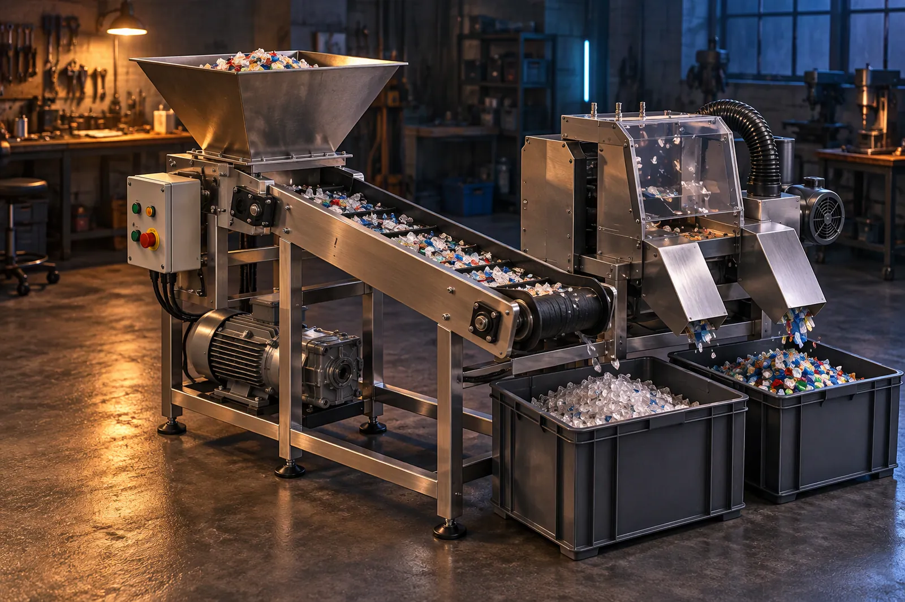
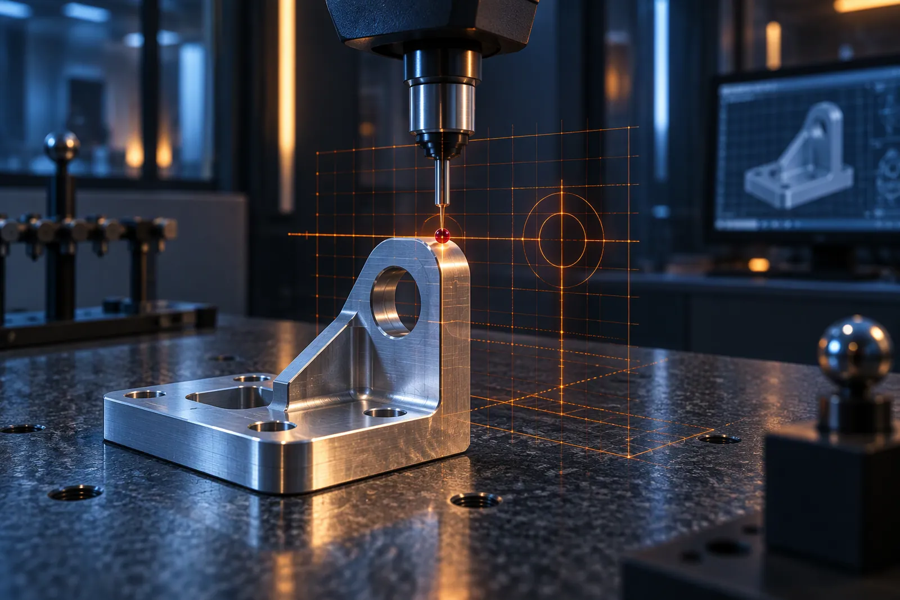

Quality Inspector cum Engineer
Sagar Industries·Katraj, Pune
- Lead daily quality meetings and keep inspection priorities moving across the shop floor.
- Handle customer quality topics directly, from first report to corrective action.
I'm Aditya Sarwade, a mechanical engineer from Latur. For four years I've been inspecting machined, forged and welded parts — reading drawings, running GOM scans against CAD data, and closing quality issues on the shop floor.
I started at Puranmal Lahoti Government Polytechnic, Latur, with a diploma in Mechanical Engineering in 2020 — and a student team building a plastic separating machine. That project taught me the part of engineering I still enjoy most: turning drawings and ideas into something that physically works.
Since December 2021 I've been on the shop floor. I began as a Jr. Engineer with Accurate Engineering, deployed to Bajaj Auto's Chakan plant, where I measured machined and forged samples, handled QSR/CMR parts and compared castings, weldments and pressings against CAD data in GOM. Today I'm Quality Inspector cum Engineer at Sagar Industries, Katraj — running daily quality meetings and handling customer quality topics.
I care about clean measurement plans, honest numbers and clear communication. If a part doesn't match the drawing, I want to know why — not just stamp the report.
Sagar Industries·Katraj, Pune
Accurate Engineering Pvt. Ltd.·Hadapsar, Pune
One student build that started everything, plus the inspection work that fills my days.

Co-founded a student development group around the machine, served as a core team member, and was responsible for making sure the machine was actually built and working properly — from concept and fabrication to the first successful run.

Compared casting, welding and pressing parts against CAD data using GOM scanning and inspection, with Local Best Fit, PLP and RPS alignments — the daily bridge between a drawing and a physical part.
Calibrated gauges, handled QSR and CMR parts, and used profile projectors and surface testers to verify the features that a drawing can't argue about.
Short, practical posts on metrology, drawings, GOM and life on the shop floor.
Have a quality question, a role to discuss, or a part that won't meet drawing? Send a note — I read everything.